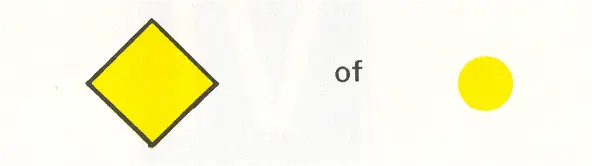
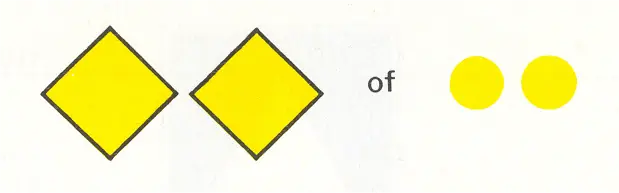
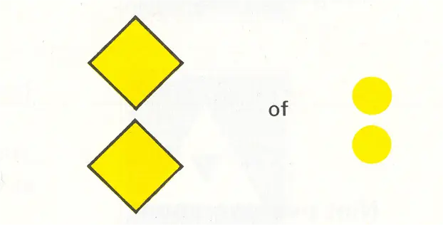
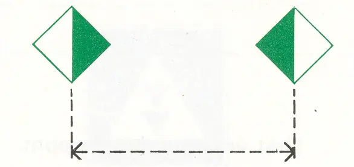
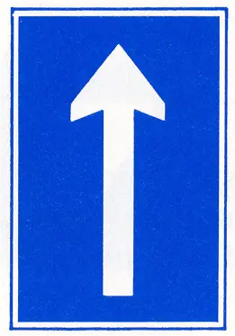
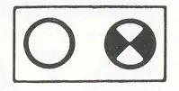

D. AANBEVELINGSTEKENSTEKENS
Opmerking
Deze tekens kunnen worden aangevuld of verduidelijkt met bijkomende tekens, vermeld onder F
D.1 | Aanbevolen doorvaartopening (vaste bruggen); * doorvaart toegestaan (gesloten beweegbare bruggen) | ||
a | doorvaart uit de tegengestelde richting toegestaan (artikelen 6.25, lid 2, 6.26, lid 4, 6.27, lid 3) |  | |
b | doorvaart uit de tegengestelde richting verboden ((artikelen 6.25, lid 2, 6.26, lid 4, 6.27, lid 3) |  | |
 | |||
D.2 | Aanbeveling binnen de aangegeven begrenzing te varen (artikel 6.24 lid 2b) |  | |
D.3 | Aanbeveling te varen in de richting aangegeven door: | ||
a | de pijl | ||
b | idem |  | |
c | het isofase licht |  |
* Bij een vaste brug met slechts één doorvaartopening kan een geel licht boven die doorvaartopening zijn aangebracht als oriënteringslicht